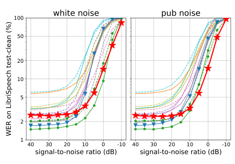

McDonald's spent nearly five years building an AI to take drive-thru orders, then switched it off
It sold the system to IBM in 2021 and ran it at more than 100 US restaurants. McDonald's never published how often it got an order right, though reporting guessed about 85 percent.
Why this matters
Ordering by voice is one of the first AI systems many people meet in daily life, at a fast-food speaker where a computer, a person, or some mix of the two takes down lunch. McDonald's ran the most visible attempt at automating it, with IBM's help, at more than 100 US restaurants, and switched it off in 2024. Three questions run through it: why a drive-thru is an unusually hard place for speech recognition, what a company does and does not tell you when it ends a project like this, and how much of today's automated ordering is still a person you cannot see.
- 01
- Whisper transcribes audio it never trained on, and silence no one spoke: how a modern speech recognizer turns sound into words, and where it stops being reliable.
What McDonald's switched off in July 2024
In September 2019, McDonald's agreed to buy Apprente, an early-stage voice-AI company, and folded its engineers into a new in-house group called McD Tech Labs, aimed at faster and more accurate order taking at the drive-thru.1 Two years later it sold that group to IBM and let IBM scale the system, which the two companies called automated order taking, across more than 100 US restaurants.2 In June 2024, McDonald's told its franchisees to turn the system off. Every test restaurant removed it no later than July 26, 2024.3
Taking an order at a drive-thru sounds like the easy case for a talking computer. The menu is fixed, the same items repeat all day, and the customer is trying to be understood. McDonald's had five years, the company that built the technology, and then IBM's scale behind it. It still could not make the system accurate enough to keep.
From Apprente to IBM and back off the menu
McDonald's did not build the order-taker itself. It bought the pieces, assembled them in-house, and then sold the whole effort to a company with more experience running customer-service AI.2
-
Sep 2019
McDonald's buys Apprente1
The Apprente team becomes the founding staff of McD Tech Labs, a new group inside McDonald's Global Technology, chartered to build voice ordering for the drive-thru first and mobile and kiosks later.
-
Spring 2021
The system goes live at 10 Chicago restaurants4
The first public test puts automated order taking on the speakers at ten Chicago-area drive-thrus.
-
Oct 27, 2021
McDonald's sells McD Tech Labs to IBM2
A joint statement moves the team to IBM's Cloud & Cognitive Software division. Both companies say the testing so far "has shown substantial benefits to customers and the restaurant crew experience."
-
2021–2024
IBM scales the system past 100 restaurants5
The test runs for about two years across more than 100 US drive-thrus. Later reporting says the system struggled with accuracy across accents and dialects, and that franchisees found it expensive to run.
-
Jun–Jul 2024
McDonald's ends the test3
Mason Smoot, chief restaurant officer for McDonald's USA, tells franchisees the IBM test will end with no expansion. Automated order taking is switched off in every test restaurant no later than July 26, 2024.
Three things have to work between the speaker and the fryer
A voice order-taker is not one program. It is a chain of three, and an order survives only if each link holds.
-
Turn sound into text
The first stage is automatic speech recognition: the part that turns the audio coming off the speaker into written words. A modern recognizer like Whisper does this by predicting the most likely words for the sound it hears. This is the piece most people mean when they say the AI is "listening."
-
Turn the text into an order
The second stage reads those words and decides what was actually ordered: which menu items, how many, which changes, and what to ignore. "Lemme get, uh, two of the number three, no pickles, and a large, actually a medium, Coke" has to become clean line items on a kitchen screen.
-
Decide when to call a human
The third stage is the fallback. When the system is unsure, it hands the order to a crew member who listens and fixes it. How often that happens is the real measure of whether the automation is doing the job or a person is.
Each stage can fail, and the drive-thru attacks the first one hardest. A drive-thru is a noise machine: idling engines, traffic on the road behind, wind across the microphone, a passenger talking over the driver, and menu names said forty different ways. Speech recognition degrades in exactly these conditions. The clearest published measure of that comes from the Whisper speech model, whose developers scored it on recordings with noise mixed in at controlled levels.6

Signal-to-noise ratio, or SNR, is how loud the speech is next to the noise around it, measured in decibels. Word error rate, or WER, is the share of words the recognizer gets wrong. As the ratio drops below about 10 decibels, WER climbs steeply, and even the best model in the test loses the words.6 A car idling at a menu board, with traffic behind it, pushes the ratio down toward that range.
McDonald's never published how accurate its own system was. The figure that gets repeated, about 85 percent, comes from reporting rather than from McDonald's or IBM, and neither company released a measured number.4 Taken at face value, 85 percent accuracy means a crew member had to step in on nearly one order in five.4 The same reporting that carried that figure said the system had the most trouble with different accents and dialects.5
Why no one can say whether it worked
McDonald's did not describe the ending as a failure.
The IBM test produced successes, and voice ordering will still be part of McDonald's future.
Mason Smoot wrote that "while there have been successes to date, we feel there is an opportunity to explore voice ordering solutions more broadly."3 McDonald's said its work with IBM gave it "the confidence that a voice ordering solution for [the] drive-through will be part of our restaurants' future," with a decision on a new system promised by the end of 2024.7
Set that against the public record, and the record cannot confirm it or refute it, because there is no accuracy number in the record either. What the public saw instead were the failures customers filmed. In one, bacon was added to an ice-cream order. In another, a request for vanilla ice cream and water came back with several ice creams, packets of ketchup, and two servings of butter.8 These clips are real and were carried by mainstream outlets. But they are user-posted videos with no verifiable original poster, restaurant, or date. They show the behavior was filmed and went viral. They do not measure how often it happened.8
McDonald's says the test succeeded well enough to keep pursuing the idea. The visible evidence is a run of filmed mistakes and a reported accuracy in the low-to-mid 80s, under the roughly 95 percent that competitors treat as the bar for going fully automated.9 Two things would separate the accounts: a measured order-accuracy rate over the pilot, and the stated reason for stopping. McDonald's gave neither, so the question stays open.
The same order still routes to a person
The McDonald's system needed a crew member on some share of orders. Across the industry, the human is often further away and doing more of the work.
The plainest documentation of that comes not from McDonald's but from a competitor. In January 2025 the Securities and Exchange Commission settled a case against Presto Automation, which sold AI voice ordering to chains including Carl's Jr., Hardee's, and Del Taco.10
Presto's proprietary voice system "required a human agent to enter the orders approximately 70% of the time," and the company "hired, trained, and supervised human order takers located abroad (primarily in the Philippines and India), who processed the vast majority of drive-thru orders."10 SEC cease-and-desist order 33-11352 (Presto Automation), January 2025
The order a driver spoke into a Presto board was, most of the time, typed in by a person on the other side of the world. Presto had publicly claimed its system "eliminat[es] human order taking," which the SEC found false.10 This is a different arrangement from McDonald's, whose humans were the crew at the counter rather than remote agents. It makes the same point anyway: an "AI" drive-thru can be mostly a person, and the label on the speaker does not tell you which.
The task did not disappear when McDonald's stopped. White Castle runs SoundHound's voice AI at more than 100 drive-thru lanes, many of them around the clock, and SoundHound claims a 90 percent order-completion rate without human help.9 Whether that holds in the same engine-and-traffic noise that pushed McDonald's system into the low 80s is the question no press release answers. The customer at the speaker still cannot tell whether a computer or a person is taking the order.
The takeaway
McDonald's spent nearly five years and a sale to IBM on drive-thru voice ordering, could not make it reliable enough to keep, and never released a number saying how close it got. A drive-thru is a hard place to hear: engine and traffic noise pushes speech recognition toward failure, and accents and side conversations make it worse. When a company ends a project like this, look for the missing measurement. McDonald's called the test a success and pointed to the future without ever releasing the one figure that would show whether it worked. And the systems taking its place, at White Castle and other chains, lean on the same fragile hearing, sometimes with a remote human quietly filling the gap.
- 01
- Robust Speech Recognition via Large-Scale Weak Supervision: the speech model behind Figure 1, with the full noise-robustness results in Section 3.7.
- 02
- SEC order 33-11352, In re Presto Automation: the government's finding on how much of one "AI" drive-thru was actually remote human order-takers.
Sources
- PR Newswire (McDonald's) · McDonald's to Acquire Apprente, an Early-Stage Leader in Voice Technology
- IBM · Joint Statement from McDonald's and IBM
- Restaurant Business · McDonald's is ending its drive-thru AI test
- Engadget (J. Fingas) · McDonald's sells its automated drive-thru order-taking to IBM
- Biometric Update (J. R. McConvey) · McDonald's pauses AI voice ordering system developed with IBM
- OpenAI (Radford et al., 2022) · Robust Speech Recognition via Large-Scale Weak Supervision
- Al Jazeera · McDonald's to scrap AI pilot at drive-through outlets after order mix-ups
- Restaurant Online · McDonald's ends AI drive-thru trial in US after order mistakes
- Restaurant Dive (J. Littman) · White Castle to expand SoundHound voice AI to 100-plus drive-thru lanes
- U.S. Securities and Exchange Commission · In the Matter of Presto Automation Inc., Release No. 33-11352